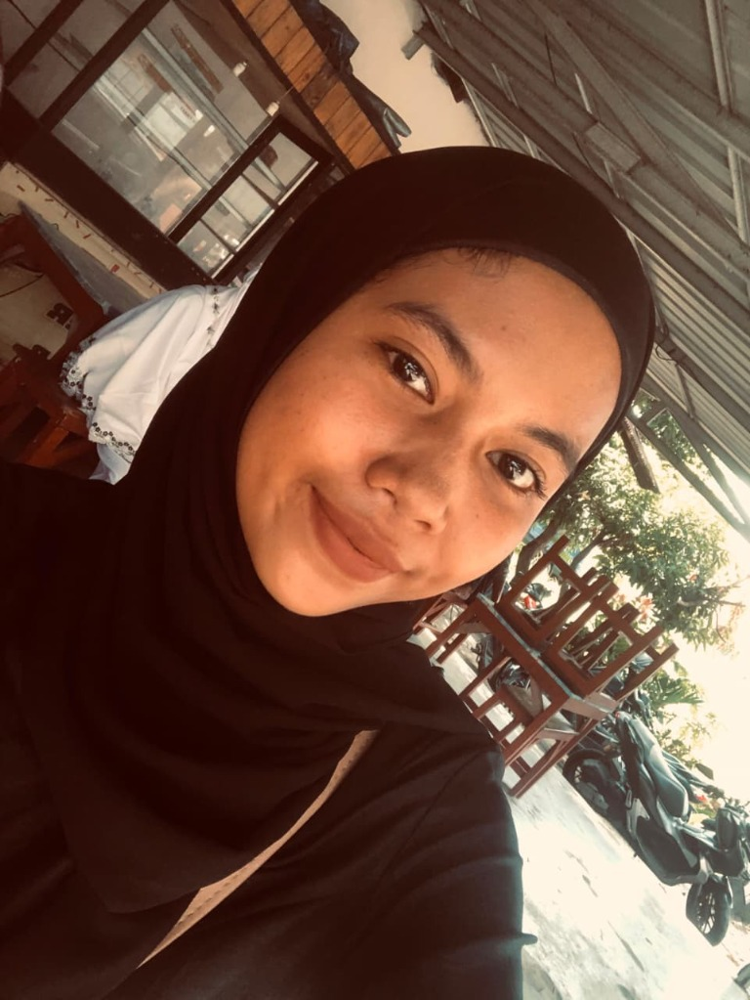

Mengenal cara berpikir komputasional
Berlatih membagi masalah menjadi langkah-langkah yang lebih sederhana agar solusinya dapat dipahami dan dikerjakan secara runtut.
PENGALAMAN BELAJARSISWI REKAYASA PERANGKAT LUNAK
Saya tertarik dengan dunia teknologi dan ingin memahami bagaimana sebuah aplikasi dirancang, dibuat, lalu digunakan untuk membantu orang lain. Melalui jurusan Rekayasa Perangkat Lunak, saya belajar mengembangkan ide sederhana menjadi karya yang bermanfaat.

Saya Amira, siswi jurusan Rekayasa Perangkat Lunak. Saya suka memahami bagaimana sebuah situs web atau aplikasi dirancang, dibuat, dan dapat membantu menyelesaikan kebutuhan sehari-hari. Bagi saya, setiap karya berawal dari rasa ingin tahu dan kemauan untuk mencoba.
Saat ini saya sedang memperkuat dasar pemrograman serta mempelajari proses pengembangan aplikasi. Melalui latihan, saya berusaha memahami hal-hal baru, belajar dari kesalahan, dan memperbaiki hasil pekerjaan secara bertahap.
Berlatih membagi masalah menjadi langkah-langkah yang lebih sederhana agar solusinya dapat dipahami dan dikerjakan secara runtut.
PENGALAMAN BELAJARMengenal bagaimana halaman situs web disusun, lalu memikirkan tampilan yang jelas, rapi, dan nyaman digunakan oleh pengunjung.
LATIHAN JURUSANBelajar bahwa membuat aplikasi tidak hanya soal menulis kode, tetapi juga memahami kebutuhan dan merencanakan solusi yang sesuai.
PROSES YANG TERUS DILATIHKunjungi situs yang sudah saya buat, lalu lihat beberapa gagasan latihan yang ingin saya kembangkan berikutnya.
Menampilkan menu makanan dan pemesanan melalui WhatsApp
Gagasan latihan memperkenalkan diri melalui tampilan yang rapi
Ide aplikasi untuk mencatat dan mengatur kegiatan harian
Ide latihan mencatat informasi agar mudah dicari kembali
✳ Setiap proyek dan langkah kecil memberi saya pengalaman serta membawa saya lebih dekat pada tujuan.
MASIH DALAM PERJALANAN
Saya ingin terus menambah pengetahuan, mengembangkan keterampilan, dan membuat karya yang bermanfaat. Setiap pengalaman baru adalah kesempatan bagi saya untuk tumbuh menjadi pribadi yang lebih baik.